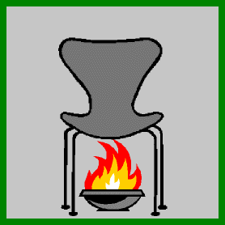
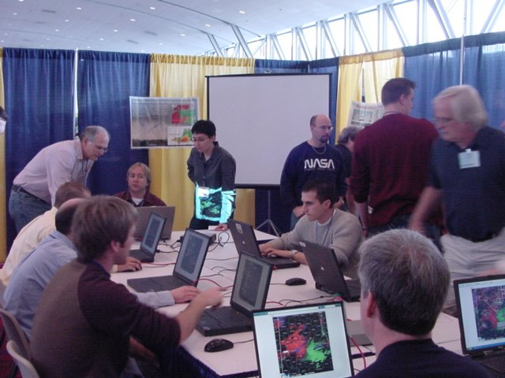

- Current Hazards
- Forecasts
- Current Weather
- Radar Imagery
- Climate
- Weather Safety
- Additional Info
- About Us
|  | NWS HotSeat The NWS Warning Decision Simulator Requires Java version 1.4.2 or higher. |
Scoring ||| Tips and Tricks ||| PDD Document ||| Comments / Suggestions
NEW! Scenario Easy | Hard | REALLY Hard (Resolution 1024x768) An outbreak of Large Hail and Tornadoes across the Atlanta metropolitan area Game play time = 8 to 14 min |
  |
NEW! Scenario Easy | Hard | REALLY Hard (Resolution 800x600) Severe weather across central Georgia Game play time = 8 to 14 min |
|
Scenario (Resolution 1024x768) Tornadoes and Severe Thunderstorms sweep across Alabama (Easy) Game play time = 15 min |
|
Scenario (Resolution 800x600) Tropical storm and associated severe weather move through the Southeast (Not so easy) Game play time = 25 min |
|
Scenario (Resolution 800x600) Springlike supercells move through Georgia the day after New Year's Day (Not so easy) Game play time = 15 min |
|
Scenario (Resolution 800x600) Severe storms strike Chicago in August 2008 Game play time = 10 min |
|
Scenario (Resolution 800x600) Quad Cities severe storms Game play time = 13 min |
|
Scenario (Resolution 800x600) Rare November severe weather event in central Iowa Game play time = 20 min |
| Scoring | |
|---|---|
| Severe Thunderstorm Warning (SVR) | Tornado Warning (TOR) |
|
|
|
|
|
|
|
|
|
|
|
|
|
|
|
| HotSeat Tips and Tricks |
|---|
| HotSeat requires Java Version 1.4.2 or later. Go to www.java.com/en for more information regarding Java. You can verify which version of Java your browser is using by going to javatester.org. |
| Scenarios 1 and 2 require a screen resolution of at least 1024x768. All other scenarios require a screen resolotion of at least 800x600. You can set your browser to full screen mode (F11) to get as much screen real estate as possible. |
| When the scenario begins, there will be no warnings in effect. Get all your warnings out as quickly as possible BEFORE worrying about the path of the storms. |
| Once you have the initial warnings issued and reports start coming in, place warnings out in front of the storms for leadtime bonus points. |
| Because warnings do cost you 50 points per minute, be sure to cancel them after the storm has passed. The key word here is "AFTER." |
| Make sure that you're looking at the most recent radar scan when you are about to issue a warning. |
| You can overlap warnings. The earliest warning you placed will be the one that verifies, thus giving you the largest possible leadtime bonus. |
| The NWS frowns upon false alarms, but when you're issuing warnings that only cover several square miles, a few false alarms are inevitable. Remember that a missed event will cost you way more than a couple false alarms. |
| After the scenario is over, you can cursor through the entire event to see which cells actually led to damage reports. |
| Just because there were no damage reports for a certain cell doesn't mean there was no damage. It could mean that no one lives in that part of the state. |
| After you've played a HotSeat scenario a few times, you may notice that things become rather... predictable. The good news is that we'll be providing more scenarios in the future. Stay tuned. |
- National Weather Service
- Peachtree City, GA Weather Forecast Office
- 4 Falcon Drive
- Peachtree City, GA 30269
- 770.486.1133
- Page Author: FFC Webmaster
- Web Master's E-mail: sr-ffc.webmaster@noaa.gov
- Page last modified: June 4th 2010 5:36 PM